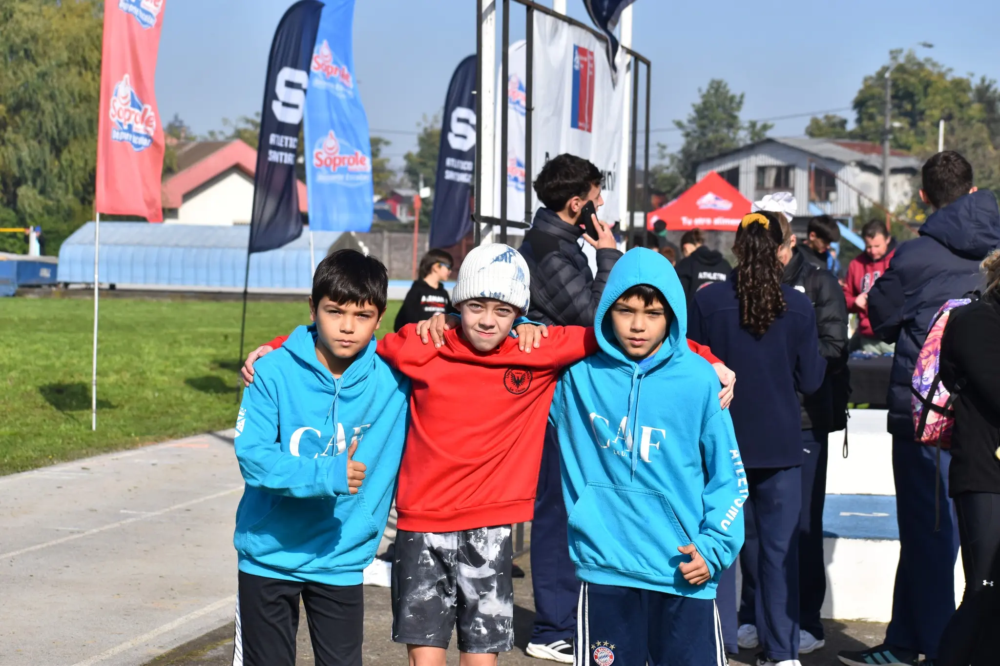
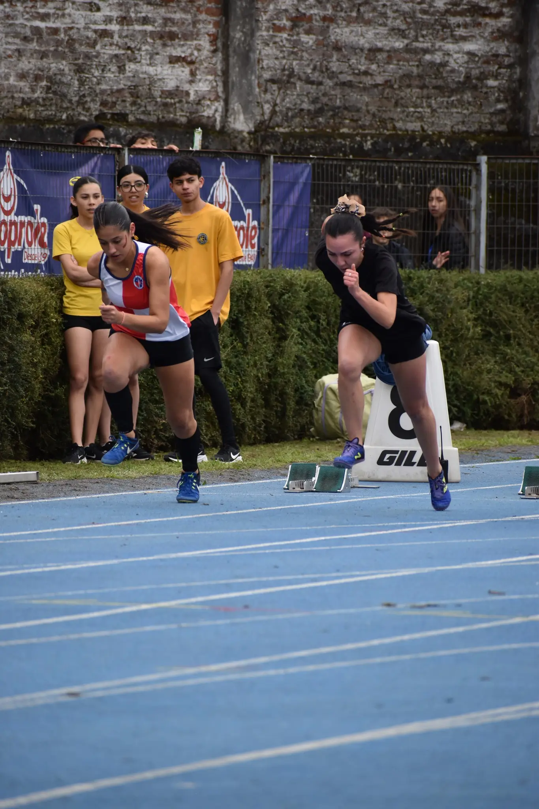

Histórico: CAF La Unión brilla en Soprole Temuco 2026
Abril, 2026Una delegación de atletas unioninos marcó un precedente en la Araucanía, obteniendo múltiples podios y consolidando el proyecto deportivo del club a nivel escolar nacional.
Durante los días 24, 25 y 26 de abril, el Club Atlético CAF de La Unión vivió una de sus jornadas más memorables.
Nuestra delegación participó en los campeonatos de atletismo Soprole en Temuco, enfrentándose a la élite del atletismo escolar de la zona sur del país.

Cuadro de Honor: Podios Individuales
Nuestros atletas demostraron un nivel excepcional en pista y campo, logrando resultados históricos para sus respectivos establecimientos y para nuestro club:
- Franco Sotelo (Colegio Santa Cruz, Río Bueno): 1er Lugar - 100 mts planos.
- Federico Zwanzger (Colegio Alemán, La Unión): 2do Lugar - 800 mts planos.
- Vicente González(Escuela Radimadi): 2do Lugar - 80 mts vallas.
- Jans Antillanca (Liceo Industrial Ricardo Fenner): 2do Lugar - 110 mts vallas.
- Elías Olivera (Liceo B12, La Unión): 2do Lugar - 110 mts vallas.
- Isabella Robert (Colegio Alemán, La Unión): 3er Lugar - 60 mts planos.
- Alfonso Manríquez (Colegio Alemán, La Unión): 3er Lugar - Salto Alto.
La hazaña de la Escuela Radimadi
A estos éxitos individuales se suma el logro colectivo excepcional de la Escuela Radimadi, que obtuvo dos Primeros Lugares en los relevos 4x200 y 5x80 (categoría infantil varones), posicionando al atletismo municipal en la cima del podio.

Nota redactada por: Equipo de Comunicación CAF 2026
Para prensa y medios interesados, contactar a través de nuestros canales oficiales.